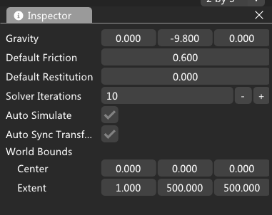
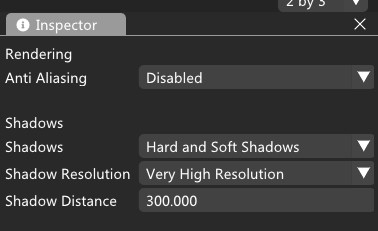

创建、打开项目
- 1.运行editor.exe(在安装目录下的win\x64\editor.exe)，弹出如下界面
- (1).历史项目：之前打开过的项目列表，"bin"项目名称，"path:XXX"项目路径。点击项目名称可以打开一个项目(比如图中的"bin"项目)
- (2).创建新项目：点击后弹出文件对话框，可以选择新项目的目录和项目名称
- (3).打开已有项目：点击后弹出文件对话框，可以选择一个已有的项目(选择的目录需要有名称为"assets"的子目录)
主界面介绍
- 进入项目后，出现编辑器主界面，主要模块如下：

- 1.主菜单栏
- 2.工具条
- 3.场景树：创建游戏对象，包括相机、灯光、模型等
- 4.编辑器视图：编辑游戏对象主窗口
- 5.游戏视图
- 6.资源视图：显示游戏中用到的资源，资源需要位于assets目录
- 7.属性视图：编辑游戏对象属性，包括添加组件等
- 8.日志界面
- 9.编辑器布局切换
主菜单栏
1.File
- (1).打开项目、保存项目
- (2).打开场景、保存场景
2.Edit
- (1).Layer和Tag：可以设置GameObject用到的Layer和Tag
- (2).Physics：可以设置物理属性
- (3).Quality：可以设置MSAA，shadowmap等



3.GameObject：创建游戏对象
4.Component：添加组件
5.Window：打开或关闭界面
6.Help
场景树
- (1).鼠标右键，弹出菜单栏，点击对应项可以创建对象
- (2).鼠标选择对象，可以在属性窗口编辑信息
- (3).鼠标右键对象，可以进行复制或删除等操作
编辑器视图
- (1).鼠标右键配合键盘WASD键，可以实现场景漫游
- (2).鼠标换轮可以拉进或拉远相机
游戏视图
- (1).点击顶部播放按钮，可以运行创建的场景
- (2).再次点击播放按钮，可以关闭播放
资源视图
- (1).显示游戏中可用的资源，包括：贴图、模型、字体、材质、shader、音频、视频、文本文件、UI图集等
- (2).鼠标右键，可以删除或创建资源
- (3).可以从其他文件夹拖动资源到编辑器，方式是在Windows文件夹拖动需要的文件，在资源视图界面松开鼠标
属性视图
- (1).可以添加或删除组件
- (2).编辑对象属性
添加组件
日志界面
性能分析
- (1).引擎集成了Tracy开源性能分析工具
- (2).可以分析cpu、内存等的使用情况；后面接入GPU分析